# mysql 8.0.30免安装版启动流程
# 下载mysql免安装压缩包
下载地址：https://dev.mysql.com/get/Downloads/MySQL-8.0/mysql-8.0.30-winx64.zip
# 解压到任意目录
我的解压目录是：D:\soft\mysql-8.0.30-winx64
# 配置
# 创建文件夹data和文件my.ini
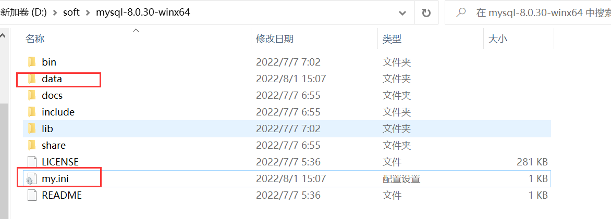
# 在my.ini中编写配置信息
[mysql]
# 设置mysql客户端默认字符集
default-character-set=utf8mb4
[mysqld]
#设置3306端口
port = 3306
# 设置mysql的安装目录
basedir=D:/soft/mysql-8.0.30-winx64
# 设置mysql数据库的数据的存放目录
datadir=D:/soft/mysql-8.0.30-winx64/data
# 允许最大连接数
max_connections=200
# 允许连接失败的次数。这是为了防止有人从该主机试图攻击数据库系统
max_connect_errors=20
# 服务端使用的字符集默认为8比特编码的latin1字符集
character-set-server=utf8mb4
# 创建新表时将使用的默认存储引擎
default-storage-engine=INNODB
# 忽略密码
# skip-grant-tables
1
2
3
4
5
6
7
8
9
10
11
12
13
14
15
16
17
18
19
20
2
3
4
5
6
7
8
9
10
11
12
13
14
15
16
17
18
19
20
# 执行初始化命令
# 以管理员身份运行power shell
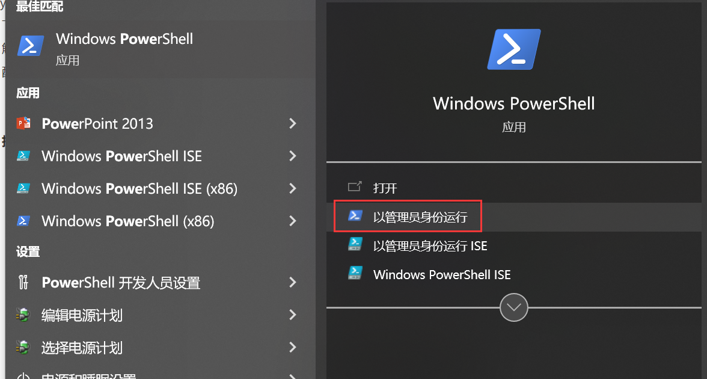
# 进入到mysql解压后的bin目录
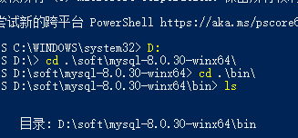
# 执行命令
mysqld --initialize --console
1
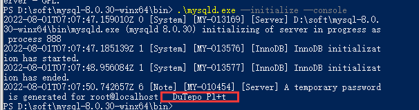
执行成功时，会得到一个临时密码，我这里得到的是：_DuTepo_P1+t。
data目录也会生成一些初始化文件：
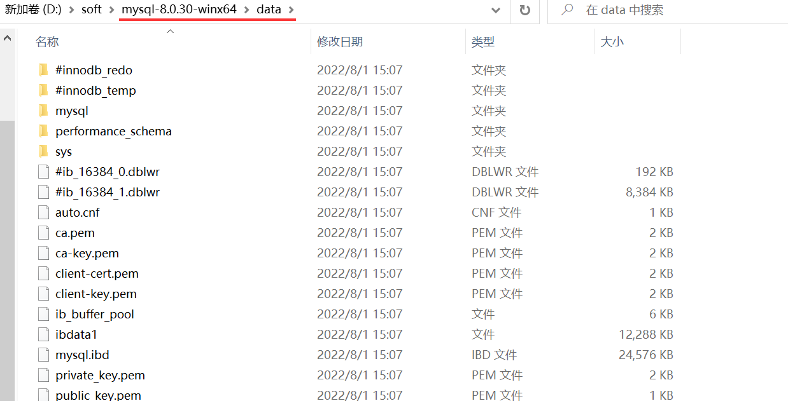
# 安装MySQL服务，并启动服务
执行命令：mysqld --install [服务名]
因为之前安装过mysql 5.7版本，此处我用了服务名mysql8
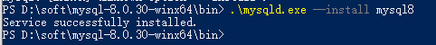
执行命令：net start [服务名]
# 登录并修改密码
# 使用临时密码登录
mysql -uroot -p_DuTepo_P1+t
1
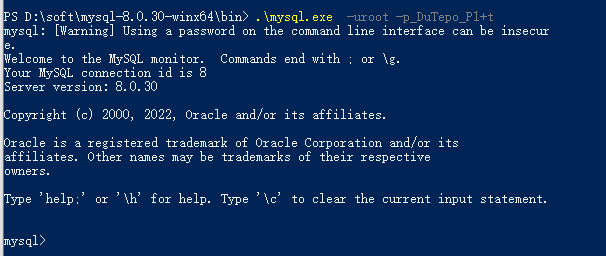
# 修改密码
alter user 'root'@'localhost' IDENTIFIED BY 'mypassword';
1
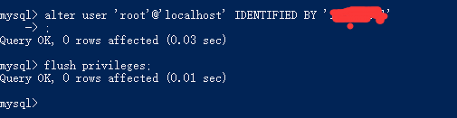
修改完刷新一下：
flush privileges;
1
# 测试密码
退出，测试旧密码，已经不能登录。
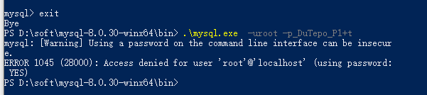
使用新密码，登录成功。
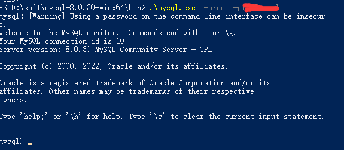
# 使用navicat登录
报错。
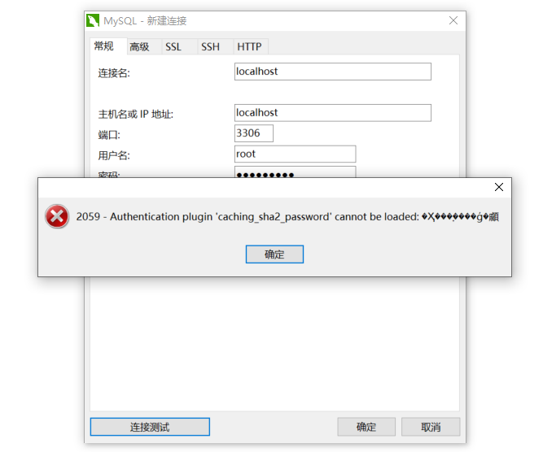
执行命令：
alter user 'root'@'localhost' IDENTIFIED WITH mysql_native_password BY 'mypassword';
1
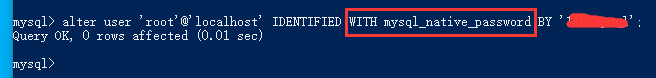
再次连接成功。